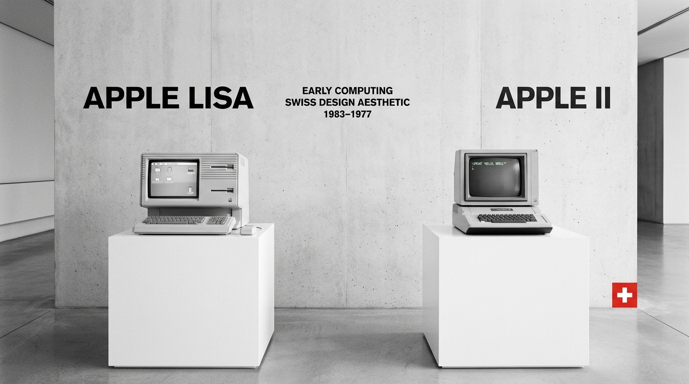
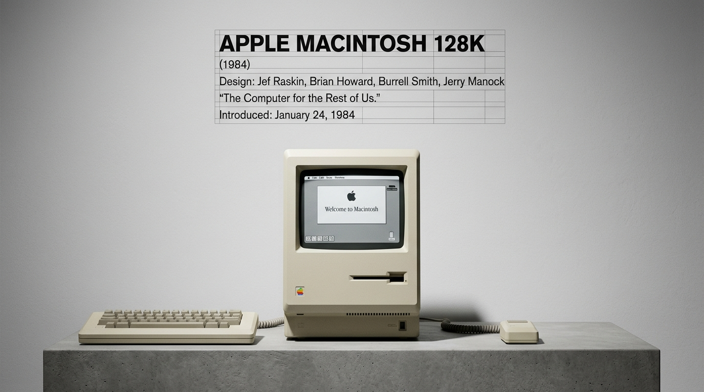
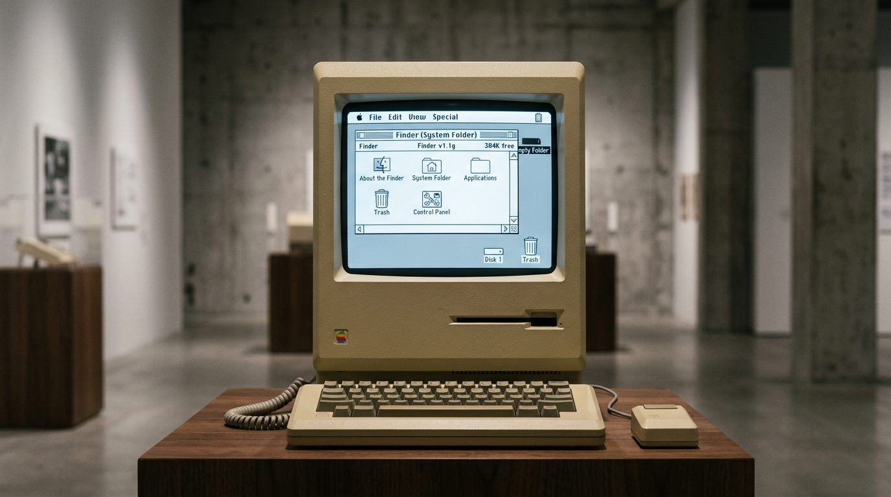
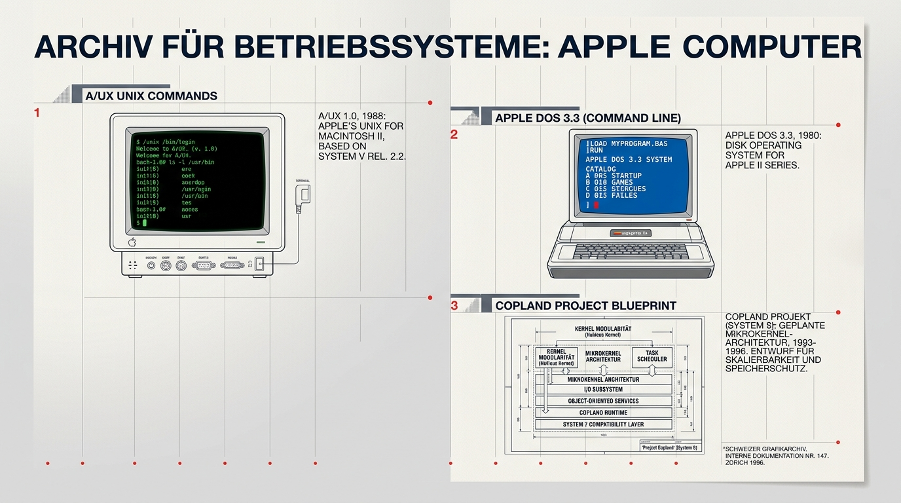
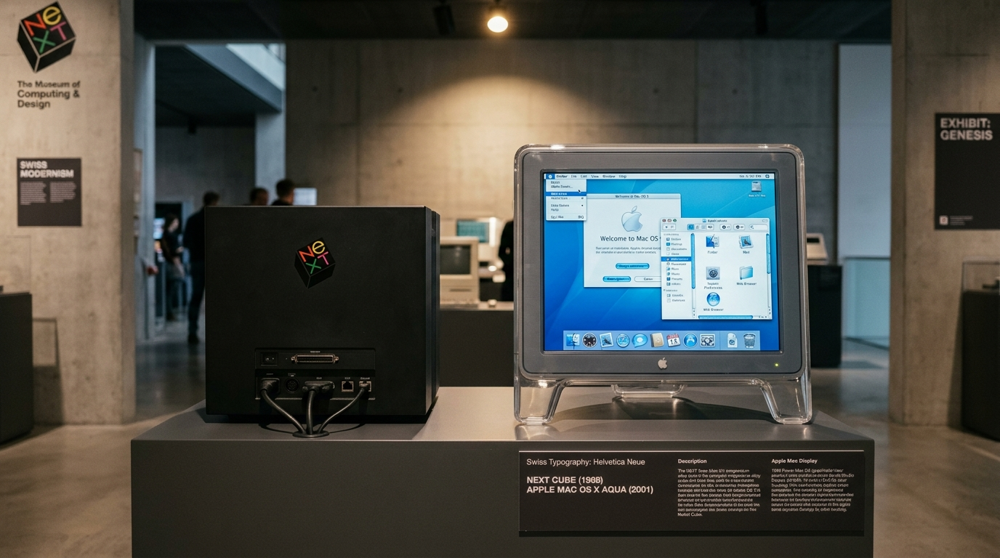
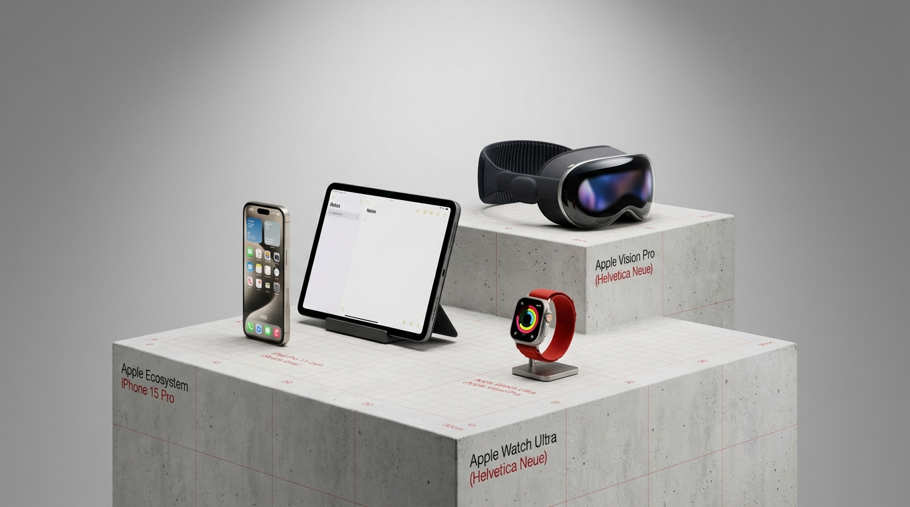

Los Inicios:
Antes del Mac y el Proyecto Lisa
El Apple II
Uno de los primeros microcomputadores producidos a gran escala y el gran éxito comercial de Apple. Sin embargo, seguía dependiendo enteramente de comandos de texto y memorización de sintaxis.
El Apple Lisa
La primera computadora comercial de Apple en incluir una Interfaz Gráfica de Usuario (GUI) y un mouse. A pesar de costar casi $10,000 USD y ser lenta (un fracaso comercial), sentó las bases irremplazables de la computación moderna.
«Lisa fue el laboratorio heroico que absorbió el costo del futuro para que el Macintosh pudiera democratizarlo.»

1984:
La Revolución del Macintosh
"Para el resto de nosotros"
Democratizó la informática. Apuntar y hacer clic en iconos reconocibles: carpetas, documentos y papelera con el cursor.
Diseño Todo-en-Uno
Monitor CRT y circuitería integrados en una carcasa compacta y amigable con un asa superior para transportarlo.
El Comercial "1984"
Obra maestra de Ridley Scott transmitida en el Super Bowl: el Mac como el salvador frente al monopolio corporativo.
"La simplicidad no es solo la ausencia de desorden. Es un estado de armonía donde el diseño y la utilidad son inseparables."

La Era del
Mac OS Clásico
System Software (System 1 al 7)
Al principio no se llamaban "Mac OS", sino simplemente System. Introdujeron el Finder, la barra de menú superior persistente, ventanas arrastrables y el paradigma del Escritorio que sigue vigente hoy.
Mac OS 8 y Mac OS 9
Apple adoptó formalmente el nombre "Mac OS". Incluyeron mejoras estéticas como Platinum UI y soporte web nativo. Sin embargo, su arquitectura base carecía de multitarea real preventiva y memoria protegida: si una aplicación fallaba, toda la máquina quedaba congelada.

Los "Otros" Sistemas
Históricos de Apple
Apple DOS y ProDOS
Los sistemas operativos de disco utilizados en las computadoras Apple II antes de la era gráfica. Controlaban unidades de disquete de 5.25" mediante comandos de consola.
A/UX (Apple Unix — 1988)
El primer intento de Apple de crear un sistema basado en UNIX para computadoras Macintosh. Diseñado para universidades y servidores gubernamentales sobre hardware de alto costo.
Copland (1996)
El intento desesperado por reconstruir Mac OS con microkernel desde cero. Sufrió retrasos masivos, incompatibilidades graves y fue cancelado, detonando la crisis más severa de Apple.

La Compra de NeXT y el
Nacimiento de Mac OS X
NeXTSTEP: Los Cimientos (1996)
Apple adquiere por $429 millones a NeXT, la empresa fundada por Jobs en 1985 tras ser despedido. Su sistema orientado a objetos basado en UNIX se convirtió en la piedra angular de Apple.
Mac OS X (2001): Borrón y Cuenta Nueva
Lanzado en marzo de 2001 con la interfaz Aqua. Mantuvo la intuitividad gráfica legendaria de Apple en la superficie, pero impulsada por un robusto núcleo UNIX (Darwin / Mach kernel) con memoria protegida y multitarea real.

El Legado:
Cómo el Mac dio vida a todo el ecosistema
Revolucionó los teléfonos móviles con el iPhone. Un derivado directo de OS X adaptado al tacto multi-touch.
Optimizado para productividad modular, lápiz óptico y pantallas táctiles de gran formato.
Microsistemas de tiempo real adaptados para sensores biométricos en la muñeca y entretenimiento en el hogar.
La frontera más reciente: computación espacial en 3D para Apple Vision Pro con renderizado foveado y rastreo ocular.
